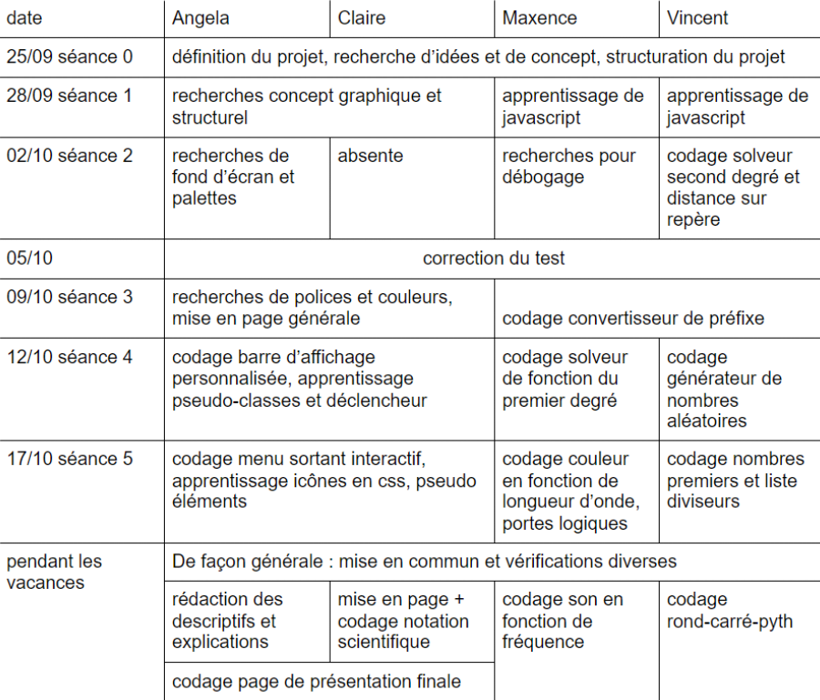

Présentation du projet
Notre réflexion par rapport au devoir :
Nous y avons réfléchi en classe, avec les 4 membres de ce groupe.
Nous en sommes venus à la conclusion que vu la taille importante de notre groupe,
il faudrait un projet
de taille suffisante pour que chacun puisse y trouver sa place.
Ce que nous avons décidé de faire :
Une bibliothèque de contenus et d'outils pour des matières scientifiques
Pourquoi l'avoir fait ?
Pour être utile à la communautée
Pour réinvestir des connaissances provenants de d’autres matières
Mais aussi pour éviter les erreurs récurrentes de conversion
Et résoudre des équations mathématiques
Comment l'avons-nous fait ?
Le code : Brackets, éditeurs de texte
Synchronisation de données : Google Drive
Centralisation des idées : Google Docs
Utilisation de ressources en lignes : w3school, mozilla developper, etc
Les problèmes que nous avons rencontrés :
Valeurs interdites ou réservées (js)
Imprécision des nombres flottant (js)
Erreurs de chemins relatifs (html)
Erreurs de syntaxe (espace, argument non fermé, ...)
(html, js, css)
Conversion implicite de types (js)
Attributs non-hérités (css)
Propriétés des icônes du menu non appliquées
Conflits de règles css et html
Les unités de mesures différentes et parfois
non prises en compte par le naviguateur (vh)
Imprécisions au niveaux des attributs de certaines classes
Problème rencontré aux niveaux des différents arrondis
Notre répartition des tâches :

Les outils utilisés :
Test sur mobile : https://search.google.com/test/mobile-friendly
Encodage des caractères spéciaux :
https://outils-javascript.aliasdmc.fr/encodage-caracteres-speciaux-classement.php
Icônes : https://fontawesome.com/
Polices d'écritures : https://fonts.google.com/ et dafont.com